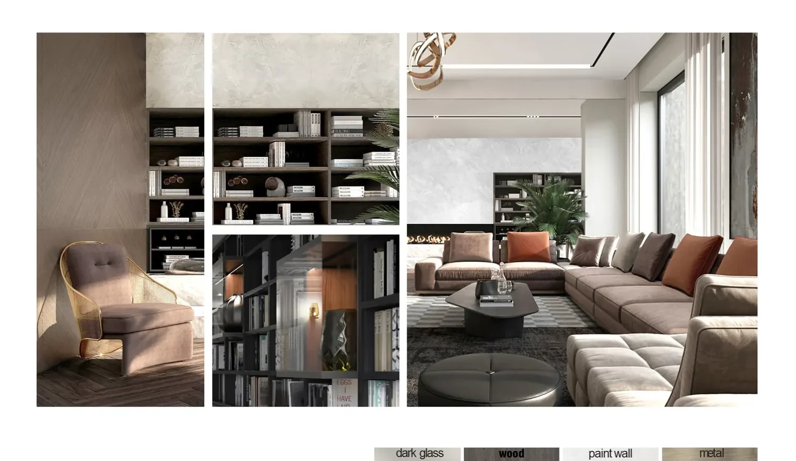

Portfolio / Residential duplex
Residential duplex visualization package.
Selected presentation images supporting interior design development, material direction and communication across a multi-level residence.

Maintaining continuity between spaces
A duplex package needs consistent treatment across views while preserving the purpose of each room. Shared material language, lighting direction and furniture scale help the presentation read as one residence rather than unrelated images. The view list should cover the key spatial relationships without duplicating information.
From design record to image package
Current plans, elevations, available model files, finish references, furniture direction and an annotated view list establish the starting point. Feedback is most efficient when comments are consolidated against named image versions. The published imagery is concept visualization and does not represent a completed built project.
Explore 3D interior rendering services or prepare inputs with our brief guide.